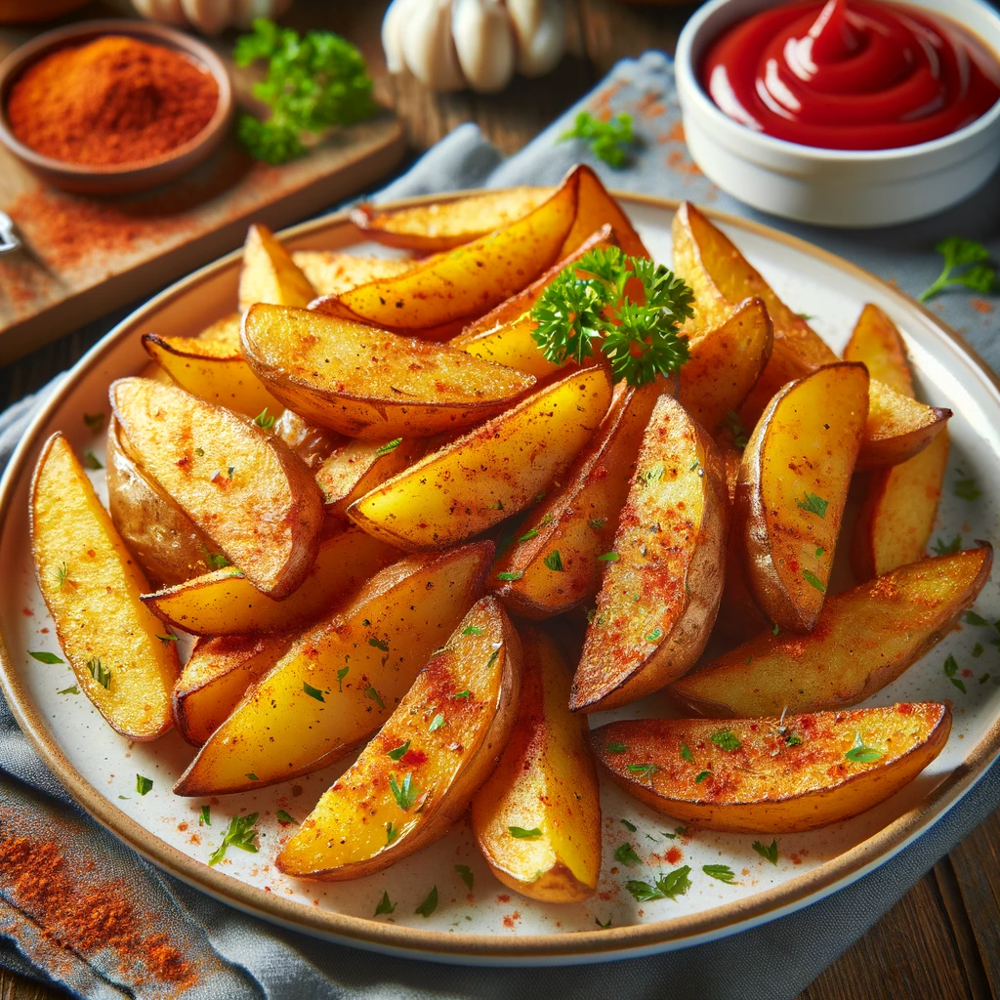

Potato Wedges

Description
Let's embark on a culinary journey to craft the perfect batch of potato wedges. They are like the robust cousins of French
fries - thicker, heartier, and with a satisfying bite. These wedges are usually baked or fried to achieve a crispy exterior
and a soft, fluffy interior, perfect for dipping or as a side dish.
Ingredients
- Potatoes (about 4 large) - cut into wedges
- Olive oil - 3 tablespoons
- Paprika - 1 teaspoon
- Garlic powder - 1/2 teaspoon
- Onion powder - 1/2 teaspoon
- Salt - to taste
- Black pepper - to taste
- Fresh parsley (optional, for garnish) - chopped
Steps
- Preheat Oven: Start by preheating your oven to 400°F (200°C).
- Prepare Potatoes: Wash the potatoes thoroughly and cut them into wedge shapes. You can peel them if you prefer,
but keeping the skin on adds a lovely texture and additional nutrients.
- Seasoning Mix: In a large bowl, mix together olive oil, paprika, garlic powder, onion powder, salt, and black
pepper.
- Seasoning Mix: In a large bowl, mix together olive oil, paprika, garlic powder, onion powder, salt, and black
pepper.
- Bake: Arrange the wedges on a baking sheet in a single layer. Bake in the preheated oven for about 35-40 minutes,
or until they are golden and crispy. Flip them halfway through the cooking time for even browning.
- Garnish and Serve: Once done, sprinkle with fresh parsley for an added pop of color and freshness. Serve hot with
your favorite dipping sauce.